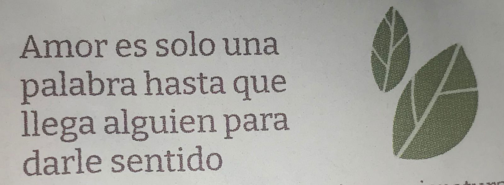

Por todas las cosas que veo en tu alma, que vos no;
hehe, que fea se ve la foto!
una de cuando te chamuyaba
Espero nunca dejar de extrañarte.
LA MARICONA DEL NOVIO
Aunque bueno, mas bien le diste sentido a mi vida.
Yo hago el amor con las mentes Me seducen las mentes. Me seduce la inteligencia Me seduce una cara y un cuerpo cuando veo que hay una mente que las mueve y que vale la pena conocer Yo hago el amor con las mentes. Hay que follarse a las mentes Yo hago el amor con las mentes

Retiro lo dicho. Joder que si te follo.
Verte por primera vez fue como ver un cuadro. Un cuadro que refleja la totalidad del artista. Alguien al que nunca le gusta como le quedan las cosas, se siente feo e incapaz, sobrecargado. Pero bueno, pareciera que eso es todo lo que el ve, porque yo veo en sus obras, lo que el no. Porque tuve la suerte de ver a apenas centimetros, los ojos del artista. Vi como se dilataban sus pupilas, se sentía como si estuviera abriendo una puerta, como si estuviera en una habitación, con todo lo que pasa por su cabeza. Vi todo lo que tenía para decir, vi un niño que se escondia de todo lo que habitaba. Te obligaron a callar, la situación obligó a tu niño a esconderse, pero yo veo tus cuadros y se como sos de verdad. Sos mi artista favorito, y esto va por todo lo que vos no ves en tu alma. Quiero escuchar todo lo que tenes para decir, quiero ver todo lo que tenes para hacer, quiero sentir todo lo que tenes para dar, porque quiero estar con vos por el resto de mi vida, porque sos mi lugar seguro, porque siempre estas ahí, esperandome con un té que se esta enfriando porque siempre tardo. Increible pensar que te debo la vida, solo porque estuviste ahi cuando mi cabeza queria alejar a todos y toda la ayuda que tenia preparada para recibir.
¿Y si no estuvieras aca?